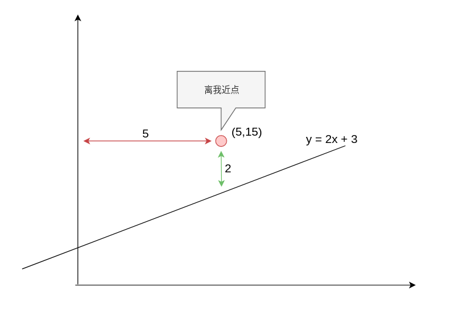
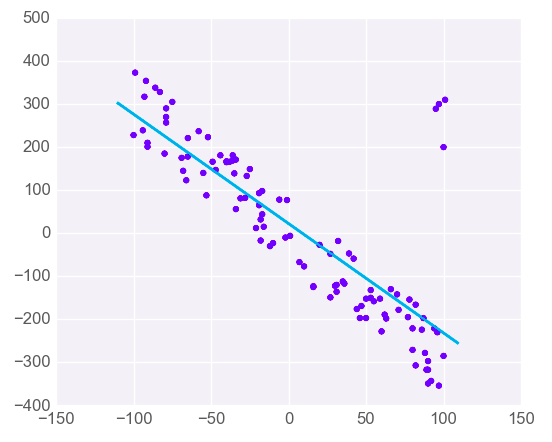

03-还记得大明湖畔的导数吗
求导，就是求变化率
位移的导数，是速度
速度的导数是加速度
我们现在用有mse，可以把mse理解成距离，对mse的求导，得到就是mse变化的速度。
当mse变化速度为0时， 说明误差进入了一个低谷。 这个时候的b值就是我们期待的b值
f(x) = x^2+5
| import matplotlib.pyplot as plt
import numpy as np
%matplotlib notebook
fig = plt.figure(figsize=(6, 6), dpi=80)
X = np.linspace(-10, 10, 500)
Y = np.square(X)+5
plt.scatter(X,Y)
plt.show()
|
f(2)=9
f(4)= 19
f(-2)=9
f(-4)= 19
f`(x) = 2x
f`(2)=4
f`(4)= 8
f`(-2)=-4
f`(-4)= -8
总结规律1：
求导后值负，增加x， mse下降。
求导后值正，减小x，mse下降
这就是信号， 有了信号就知道如何行动。
总结规律2：
求导后值负的大，小小的增加x，mse下降的多
求导后值正的大，小小的减少x，mse下降的多
变化规律:
坡度陡峭走小步，免得扯着蛋 （小的学习速率）
坡度平坦跨大步，这样跑的快 （可适当增加学习速度）
梯度下降公式推导
Predict：预测值
Actual：真实值
Area：面积
MSE=\sum ^{n}_{i=1}\left( Predict_{i}-Actual_{i}\right) ^{2}
$$
MSE=\sum ^{n}{i=1}\left( m×Area+b-Actual_{i}\right) ^{2}
$$
跟之前一样，为了简单起见，我们先假设m=0 这样每一套房屋的价格就跟面积无关了
$$
MSE=\sum ^{n}{i=1}\left(b -Actual\right) ^{2}
$$
MSE现在是一个函数，b变化，mse就会发生变化,，剩下来的n，Actual_i这些都是常数，不会发生变化。
我们把mse对b进行求导，就可以计算出来mse对b的变化率
$$
\dfrac {MSE}{\Delta b} = 2×\sum ^{n}{i=1}\left(b -Actual\right)
$$
| from sympy import * #导入计算库
i, n, b ,Actual_i= symbols('i, n, b ,Actual_i') #声明变量x,y,z
init_printing(pretty_print=True) #初始化latex显示
expr = Sum((b-Actual_i)**2, (i, 1, 10))
diff(expr,b)
|
梯度下降步骤
- 随机选取一个b值
- 计算这个b值对应的mse的斜率
- 如果mse的斜率非常大，那要根据mse的斜率，去修改b的值
- mse值越大，b的修改值越大，mse斜率为正，b需要减少，mse斜率为负，b需要增加
- 选取一个很小的值，叫learningrate，学习速率，可以理解为迈开的步伐
- 用learningrate和mse的信号去更新b的值
- 重复2-6的步骤，直到mse的斜率接近于0
代码实现
1
2
3
4
5
6
7
8
9
10
11
12
13
14
15
16
17
18
19
20 | import numpy as np
data = np.array([
[80,200],
[95,230],
[104,245],
[112,247],
[125,259],
[135,262]
])
b = 1
learningrate = 0.0001
def gradentdecent():
global b
slop = 0
for item in data[:,1]:
slop = slop + (b - item)
b = b -slop*learningrate
print("slop={},b={}".format(slop,b))
|
| gradentdecent()
for i in range(10000):
gradentdecent()
|
图表展示
| import numpy as np
data = np.array([
[80,200],
[95,230],
[104,245],
[112,247],
[125,259],
[135,262]
])
bhistory = []
msehistory = []
|
1
2
3
4
5
6
7
8
9
10
11
12
13
14
15
16
17 | b = 1
learningrate = 0.0001
def gradentdecent():
global b
slop = 0
mse = 0
for item in data[:,1]:
slop = slop + (b - item)
mse = mse + (b-item)**2
b = b -slop*learningrate
print("slop={},b={},mse={}".format(slop,b,mse))
bhistory.append(b)
msehistory.append(mse)
for i in range(10000):
gradentdecent()
|
| import matplotlib.pyplot as plt
import numpy as np
%matplotlib notebook
fig = plt.figure(figsize=(6, 6), dpi=80)
plt.scatter(bhistory,msehistory)
plt.show()
|
思考题：
分别对mx+b中的m和b求偏导数
| from sympy import * #导入计算库
i, n, b ,Actual_i= symbols('i, n, b ,Actual_i') #声明变量x,y,z
init_printing(pretty_print=True) #初始化latex显示
expr = Sum((b-Actual_i)**2, (i, 1, 10))
diff(expr,b)
|
\dfrac {MSE}{\Delta b} = \displaystyle \sum_{i=1}^{10} \left(- 2 Actual_{i} + 2 b + 2 m x\right)
| from sympy import * #导入计算库
i, m,n, b ,Actual_i= symbols('i,m, n, b ,Actual_i') #声明变量x,y,z
init_printing(pretty_print=True) #初始化latex显示
expr = Sum((m*x + b-Actual_i)**2, (i, 1, 10))
diff(expr,m)
|
\dfrac {MSE}{\Delta m} = \displaystyle \sum_{i=1}^{10} 2 x \left(- Actual_{i} + b + m x\right)
代码实战
1
2
3
4
5
6
7
8
9
10
11
12
13
14
15
16
17
18
19
20
21
22
23
24
25
26
27
28
29
30
31
32
33
34
35
36 | import numpy as np
data = np.array([
[80,200],
[95,230],
[104,245],
[112,247],
[125,259],
[135,262]
])
mhistory = []
bhistory = []
msehistory = []
b = 1
m = 1
learningrate = 0.00001
def gradentdecent():
global b ,m
bslop = 0
mslop = 0
mse = 0
for index ,item in enumerate(data[:,1]):
bslop = bslop + (b - item + data[:,0][index] * m)
mslop = mslop + data[:,0][index]*(b - item + data[:,0][index] * m)
mse = mse + (m*data[:,0][index] + b-item)**2
b = b -bslop*learningrate
m = m - mslop*learningrate
return mse
i = 0
for i in range(10000000):
mse = gradentdecent()
i = i+1
if(i%10000 == 0):
print("b={},m={},mse={}".format(b,m,mse))
|
解方程的方式求解m和b
\displaystyle \sum_{i=1}^{10} - 2 Actual_{i} + \sum_{i=1}^{10} 2 b + \sum_{i=1}^{10} 2 m x = 0
\displaystyle \sum_{i=1}^{10} - 2 Actual_{i} x + \sum_{i=1}^{10} 2 b x + \sum_{i=1}^{10} 2 m x^{2} = 0
| expand(diff(expr,b))
expand(diff(expr,m))
|
| solve([-(200+230+245+247+259+262)+6*b+m*(80+95+104+112+125+135),-(200*80+95*230+104*245+112*247+125*259+135*262)+
b*(80+95+104+112+125+135)+m*(80**2+95**2+104**2+112**2+125**2+135**2)],[b,m])
|
\displaystyle \left\{ b : \frac{491072}{4003}, \ m : \frac{4347}{4003}\right\}
为什么深度学习采用回归法，不使用求解法
二维，三维空间，少量的数据点，计算比较容易，但是一旦上升到n维空间， 计算量就几何程度倍增， 另外不一定能直接求出解，最好的办法就是计算机去拟合，寻找一个最接近的解。
梯度下降的几何学解释
\dfrac {MSE}{\Delta b} = \displaystyle \sum_{i=1}^{10} \left(- 2 Actual_{i} + 2 b + 2 m x\right)
\dfrac {MSE}{\Delta m} = \displaystyle \sum_{i=1}^{10} 2 x \left(- Actual_{i} + b + m x\right)

\dfrac {MSE}{\Delta m} = 2 * 5 * (-2) = -20
\dfrac {MSE}{\Delta b} = -4
新的公式为：
y = (2- (-20))x + (3-(-4)) = 22x + 7
从黑线一下变成红线， 这条线从（5,15）的下方，一下子变到了（5,15)的上放， 步子太大了！！
所以我们要乘以一个learningrate， 让变化的步子变的小一点，让y=2x+3 缓缓的靠近（5,15）这个点。
假设 learningrate = 0.01
新的公式为：
y = (2- (-20*learningrate))x + (3-(-4*learningrate)) \\
= (2- (-20*0.01))x + (3-(-4*0.01)) = 2.2x + 3.04
线性回归的局限性
线性回归只适合线性问题。 如果数据模型是非线性的，可以考虑使用别的模型
